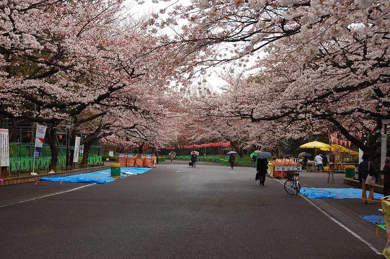

La compétition du pacifique !
Coup d'envoi
Test
Test
VS
test
Test
Test
Les stades
Retrouvez ici tous les stades dans lesquels se dérouleront les rencontres de la Rugby Tropical Cup 2023.
Les équipes
Découvrez chaque équipe de rugby à XV faisant partie de la compétition !
Le Rugby à XV
Le rugby à XV, également connu sous le nom de rugby union, est une variante du rugby qui se joue avec deux équipes de quinze joueurs chacune. C'est l'une des formes les plus populaires du rugby, notamment en Europe, en Nouvelle-Zélande, en Australie et dans d'autres régions du monde. Voici un résumé des caractéristiques principales du rugby à XV :
- Nombre de joueurs : Chaque équipe est composée de quinze joueurs sur le terrain en même temps, répartis en huit avants et sept arrières.
- Objectif du jeu : L'objectif principal du rugby à XV est de marquer des points en portant le ballon ovale au-delà de la ligne de but adverse et en l'aplatissant (essai) ou en le transformant entre les poteaux (conversion) après un essai. Les équipes peuvent également marquer des points en réussissant des pénalités ou des drops kicks.
- Terrain : Le jeu se déroule sur un terrain rectangulaire avec des lignes de touche sur les côtés et des lignes de but à chaque extrémité. Les poteaux de but se trouvent au centre de chaque ligne de but.
- Durée du match : Un match de rugby à XV est divisé en deux mi-temps de 40 minutes chacune, avec une pause entre les deux. En cas d'égalité, le match peut se terminer sur un match nul, à moins qu'il ne s'agisse d'une compétition où des prolongations ou une séance de tirs au but sont prévues.
- Règles principales : Le jeu implique le plaquage des adversaires pour les arrêter, suivi d'un regroupement pour la possession du ballon. Les équipes peuvent également disputer des mêlées et des touches pour obtenir la possession du ballon. Les passes en arrière sont autorisées, mais les passes en avant sont interdites.
- Contacts physiques : Le rugby à XV est un sport de contact physique intense, avec des plaquages, des mêlées et des regroupements. Les joueurs portent généralement des protections, notamment des casques, des épaulières et des protège-dents.
- Compétitions : Le rugby à XV est pratiqué au niveau international avec des équipes nationales, notamment la Coupe du Monde de Rugby, ainsi qu'au niveau des clubs dans des ligues nationales et internationales, telles que le Tournoi des Six Nations en Europe et le Super Rugby en Australie, en Nouvelle-Zélande et en Afrique du Sud.
- Valeurs : Le rugby à XV est également connu pour ses valeurs de respect, d'intégrité, de camaraderie et de fair-play, qui sont mises en avant dans le code de conduite du rugby.
En résumé, le rugby à XV, ou rugby union, est un sport de contact physique pratiqué avec deux équipes de quinze joueurs chacune, dont l'objectif est de marquer des points en portant le ballon au-delà de la ligne de but adverse tout en respectant des règles strictes et en mettant en avant des valeurs sportives importantes.
Le Japon
Le Japon est un pays insulaire d'Asie de l'Est, situé dans l'océan Pacifique. Il se compose de quatre principales îles, Honshu, Hokkaido, Kyushu et Shikoku, ainsi que de nombreuses îles plus petites. Le Japon est renommé pour sa culture riche et diversifiée, qui mélange traditions anciennes et innovations modernes.
La nation japonaise est réputée pour sa cuisine, notamment le sushi, le sashimi et le ramen. Le pays est également célèbre pour ses arts traditionnels tels que l'origami, le théâtre kabuki et la cérémonie du thé. La langue japonaise est caractérisée par des caractères kanji, hiragana et katakana.
Sur le plan économique, le Japon est l'une des plus grandes puissances mondiales, avec des entreprises multinationales comme Toyota et Sony. Le pays est également connu pour ses avancées technologiques, notamment dans l'industrie de l'électronique et de l'automobile.
Le Japon possède un riche patrimoine historique, avec des temples bouddhistes et des sanctuaires shintoïstes dispersés à travers le pays. Les saisons y sont distinctes, avec des cerisiers en fleurs au printemps, des festivals d'été animés, des feuilles d'automne colorées et des hivers enneigés.
Le Japon est une monarchie constitutionnelle avec un empereur symbolique. Tokyo, sa capitale, est l'une des villes les plus peuplées et dynamiques du monde. Malgré sa taille relativement petite, le Japon a une influence culturelle mondiale significative et continue d'être un acteur majeur dans l'économie mondiale.
